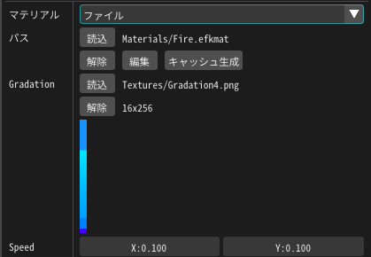
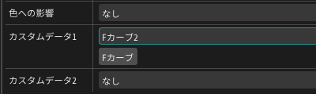
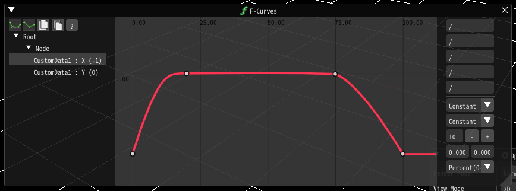

03. 続・マテリアルでトゥーン風の炎を表現する。¶
概要¶
前章では、トゥーン風の炎を作成しました。 しかし、パラメーターは全てマテリアルに含まれており使いまわせません。 また、連続で再生されていて、途中で消えることがありません。 本章では、前章の炎を汎用的に使用できるようにします。
本章で作成するエフェクト
作成¶
本章では、前章で作成したエフェクトを元に変更します。 わかりやすくするために、パーティクルの寿命を変更しています。
パラメーター¶
Effekseerのマテリアルにはパラメーターというノードがあります。 この、パラメーターというノードを使用するとEffekseerからマテリアルのパラメーターを変更できるようになります。
まずは外部からエフェクトの色を編集できるようにするために、グラデーションの画像をパラメーターに置き換えます。
パラメーター画像ノード を追加します。
そして、画像参照ノードにつなげます。
パラメーターノードに名前を入力します。この名前はEffekseerに表示され、Effekseerで設定された画像との紐づけに使用されます。 そのため、あまり、変更しないようにしましょう。 今回は、グラデーションを置き換えるので、名前は、Gradationにします。
デフォルトの値として画像にTextures/Gradation2.pngを設定します。
Effekseerにも、グラデーションのパラメーターが表示されました。 このままではデフォルトの画像が表示されたままなので、新たに画像を設定します。
今回はここにTextures/Gradation4.pngを設定します。
エフェクトの画像が差し変わりました。

今回はテクスチャを差し替えるようにしましたが、数値もパラメーターにできます。
画像が流れる速度をパラメーターにしてみましょう。
パラメーター2ノード を追加します。
名前をSpeedにします。
デフォルトのパラメーターを(0.1,0.1)にします。
そして、移動UVノード のSpeedにつなげます。
EffekseerにSpeedが表示されるので数値を変更します。
数値を変更すると速度が変わります。 今回はデフォルトのままで問題ないので、数値を(0.1,0.1)のままにします。
これらを設定していくとマテリアルにパラメーターを埋め込むことなく、外部から設定できるようになります。
カスタムデータ¶
このままでは、パラメーターを外部にしただけであって、炎は連続的に流れたままです。 カスタムデータを用いて、始まりと終わりを設定できるようにします。
ここではカスタムデータ、というノードを指定します。 このノードはパラメーターと似ていますが、エフェクトのパーティクルごとに異なる値を設定でき、 かつFカーブ等も設定できます。
今回はグラデーションマップを移動させることで炎を消します。
外部からのパラメーターでグラデーションの参照する位置をずらし、フェードアウトを実現します。
グラデーション画像を透明になる方向に移動させて透明します。
まずは、カスタムデータ1ノード を追加します。
そして、UVなのでRGに接続します。
そして、Effekseerの描画共通パネルからカスタムデータを設定します。 今回はUVを移動させてフェードインアウトを実現するので、Fカーブを使用します。
FカーブでRの値を、消えているときは-1、表示中は0になるように設定します。
-1を入力すると、グラデーション画像の上のほうを参照するようになります。 すなわち、画像が消えることになります。
そうするとエフェクトがフェードインアウトするようになりました。
最後に、本章で作成されたエフェクトをダウンロードできるようにしてみました。
まとめ¶
今回は炎のバリエーションを作成しました。 マテリアルをエフェクトごとに作成するのは大変なので使いまわせるように汎用的に作ることは重要です。